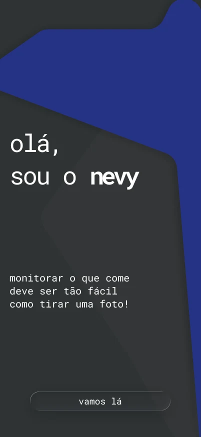
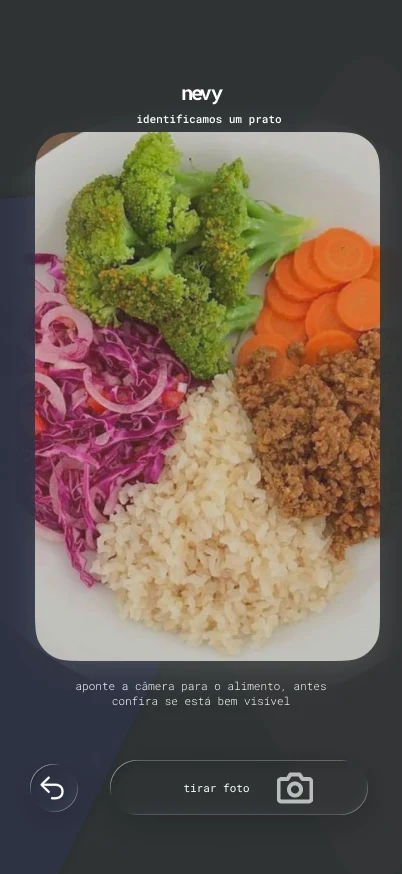
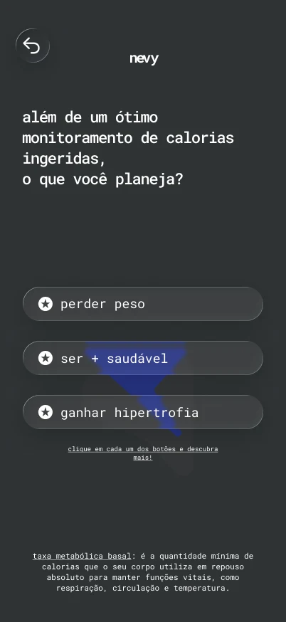
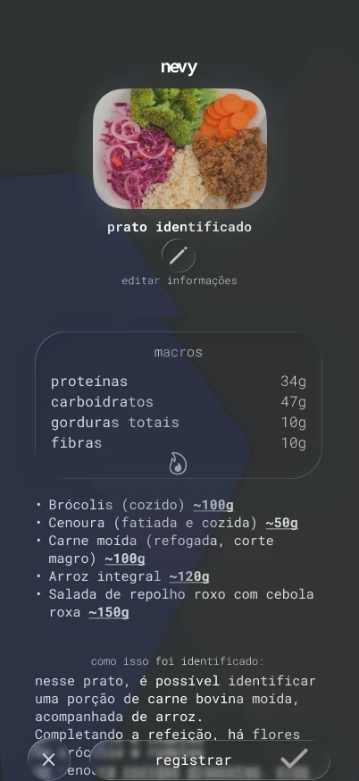
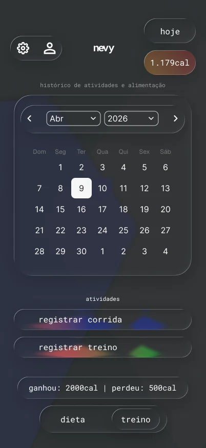
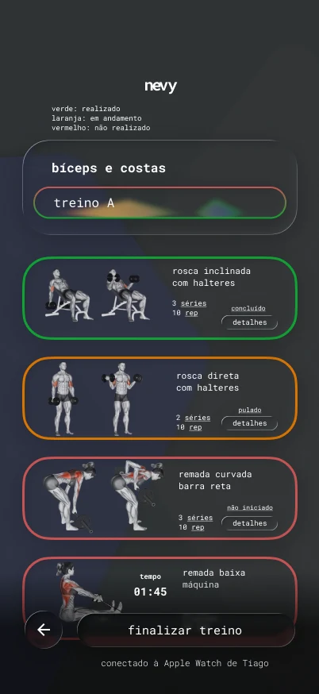

01 / case
nevy.
um app iOS em construção para registrar o que você come com uma foto, e ver alimentação e treino no mesmo lugar.



contexto
registrar comida cansa antes de ajudar.
a maioria dos apps de alimentação pede para digitar cada item, separa comida e atividade em produtos diferentes e mostra números sem explicar o que eles querem dizer. O esforço de registrar chega antes de qualquer benefício.
pergunta
e se registrar uma refeição fosse tão fácil quanto tirar uma foto?
a frase virou a primeira tela do app e a régua para cada decisão: se uma etapa deixa o registro mais lento que uma foto, ela precisa de um bom motivo para existir.
processo
quatro decisões que moldaram o app.

mostrar valor antes de pedir dados.
o onboarding começa pela promessa do app e só depois pergunta o objetivo. Cada botão explica o que muda na meta, e termos como taxa metabólica basal aparecem explicados na própria tela, sem mandar a pessoa procurar fora.

a ia sugere, a pessoa confirma.
a foto vira uma estimativa, não uma resposta final. O resultado mostra os macros, cada alimento com a porção marcada com “~” e um trecho de “como isso foi identificado”. Editar fica logo abaixo do prato, e nada é salvo antes de a pessoa tocar em registrar. Se a análise falhar, o registro manual continua disponível.
o dia inteiro em poucos segundos.
a tela principal responde três perguntas sem abrir nada: o que comi, quanto isso soma e como estão os macros. As refeições são escritas como a pessoa fala (“duas maçãs”), o total fica no topo e a câmera fica no centro, ao alcance do polegar.


comida e treino no mesmo histórico.
uma barra alterna entre dieta e treino, e o calendário junta os dois. No treino, cada exercício tem cor e também um rótulo escrito (concluído, pulado, não iniciado), para que o estado não dependa só da cor.
linguagem visual
vidro com moderação, contraste primeiro.
superfícies translúcidas no estilo Liquid Glass da Apple aparecem nos botões e cards, mas a hierarquia vem do texto e do contraste. A tipografia monoespaçada e as minúsculas dão ao app um tom de conversa, e o movimento só existe para explicar transições.
próximos passos
o caminho até a primeira versão.
- definiçãoescopo, revisão do Figma e arquitetura
- fundaçãoprojeto em SwiftUI, contas, design system e onboarding
- alimentaçãotela do dia, câmera, análise, edição e histórico
- atividadetreino, corrida e integração com o Saúde do iPhone
- constânciasequência de dias, progresso e relatórios
- lançamentotestes, acessibilidade, desempenho e App Store
quer acompanhar?
vamos conversar.